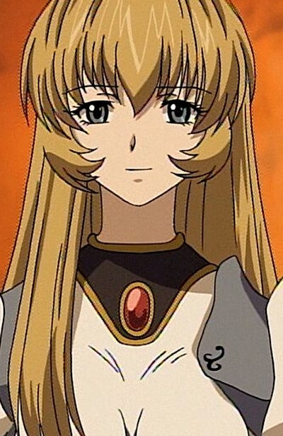

|
Charlotte Baskerville |
|
Charlotte Baskerville or Lottie is the bubbly girl. She was a participant in the Tragedy of Sabrie. She served and apart of Baskerville house. She is peppy and bubbly but can be twisted. |
| |
Charme |
- Tsubasa Chronicle
- Tsubasa Chronicle 2nd Series
|
Charme is a friend of Keefer who Sakura met on her travels. |
 |
Dawn |
- Pokemon Diamond and Pearl
- Pokemon Movie 10: The Rise of Darkrai
- Pokemon Movie 11: Giratina and The Sky Warrior
- Pokemon Movie 12: Arceus and the Jewel of Life
- Pokemon Movie 13: Zoroark The Master of Illusions
- Pokemon Diamond and Pearl Specials
- Pokemon Black and White: Rival Destinies
|
Dawn is a 10 year girl who started her Pokemon journey. She wants to follow her mother footsteps and become a top coordinator. Dawn is very confident in her skills. She is very sensitive and supportive of her friends. |
|  |
Elfitine |
|
Elfitine is a girl who lives in a village hidden by an invisibility field where inhabitants believe her to be the Scrapped Princess. She has the ability to predict the future. |
 |
Gratz Accentine |
|
Gratz Accentine is the right hand woman in Travas' team. She is talented with the gun. |
 |
Janet |
- Pokemon Advanced Generations
|
Janet is the coordinator who inspired May to participate in Contests. She has a friend named Chaz. |
 |
Princess Sara |
- Pokemon Advanced Generations
|
Princess Sara is Princess of the Mirage Kingdom. She eligible to be ruler of the Mirage Kingdom. She has a Togepi on hand. |
 |
Winry Rockbell |
- Fullmetal Alchemist
- Fullmetal Alchemist: The Conqueror of Shamballa
- Fullmetal Alchemist: Reflections
- Fullmetal Alchemist: Premium Collection
|
Winry Rockbell is a childhood friend of the Elric brothers. Winry specializing in mechanical repair and repairs Edward's automail limbs. She is Edward's love interest. Winry is very emotional , strong-willed amd empathic person. She is enthusiastic about machinery. |